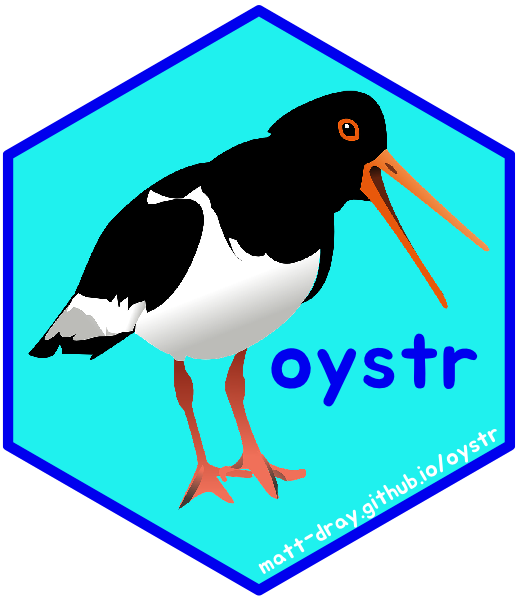
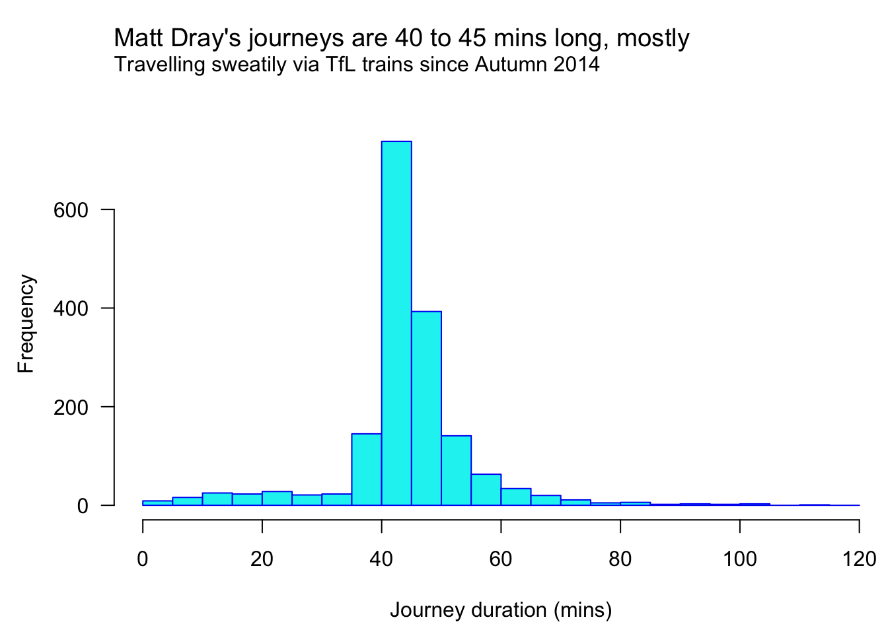

install.packages("remotes") # if not yet installed
remotes::install_github("oystr")
library(oystr)
tl;dr
- Problem: I wanted to analyse my Transport for London (TfL) travel data
- Solution: I came up with the R package name {oystr} and a hex sticker design
- Practical solution: I actually wrote the package
- Self-flagellation: it has zero dependencies
- Further problem: TfL won’t give me information I need to complete it properly
- Result: blog it and move on
- Revelation: I’ve spent more than 53 days on TfL trains since Autumn 2014
Clam-ouring for a package
Transport for London (TfL) operates the travel system in London. To use their services you ‘tap in’ with an Oyster card.
You can sign up for monthly CSV files of your Oyster journey data, or you can sign in and download it from their website, but they’re not in a fully machine-readable state. Hence the {oystr} package.
Install and load with:
{oystr} has two main functions:
oy_read()to read in CSV files from a folder and stitch them togetheroy_clean()to wrangle the data into shape and engineer new columns
There’s two functions that deal with summarising the data, but are very much under development at time of writing:
oy_summary()to create a list of basic data summaries, like most visited stationsoy_lineplot()to create a simple plots of data over time
There’s also two example data sets:
journeys_readis what a journey-history data set looks like when read in byoy_read()journeys_cleanis what that read-in data set looks like when cleaned byoy_clean()
There’s also Oyster-related colours in oy_col().
You can read more on the {oystr} website, including a vignette, and find the source on GitHub.
Winkle out the data
The oy_read() function is straightforward: basically, you supply a folder path and it finds the Oyster journey CSV files with the expected column names, reads them and binds them all together. That ends up looking like this:
str(journeys_read)'data.frame': 102 obs. of 8 variables:
$ Date : chr "31-Aug-2018" "31-Aug-2018" "28-Aug-2018" "28-Aug-2018" ...
$ Start.Time : chr "16:11" "06:47" "18:57" "13:49" ...
$ End.Time : chr "16:50" "07:34" "19:44" "14:43" ...
$ Journey.Action: chr "Station A to Station B" "Station B to Station A" "Station C to Station R" "Station R to Station L" ...
$ Charge : chr "0" "0" "0" "0" ...
$ Credit : chr "NA" "NA" "NA" "NA" ...
$ Balance : num 8 8 8 8 8 8 8 8 8 8 ...
$ Note : chr "NA" "NA" "NA" "NA" ...But this isn’t enough. The data files have several columns, like Date, Start time and Balance (see an anonymised example) that need sorting.
The oy_clean() function is the real MVP1. It does things like:
- enforce the datetime class where needed
- engineer an end date (some journeys ended a different day to when they started)
- calculate journey duration
- extract mode of transport, start and end stations, bus routes, etc
That ends up looking like this:
str(journeys_clean)'data.frame': 102 obs. of 13 variables:
$ datetime_start : POSIXct, format: "2018-08-31 16:11:00" "2018-08-31 06:47:00" ...
$ datetime_end : POSIXct, format: "2018-08-31 16:50:00" "2018-08-31 07:34:00" ...
$ weekday_start : Ord.factor w/ 7 levels "Monday"<"Tuesday"<..: 5 5 2 2 7 7 7 7 6 6 ...
$ journey_duration: 'difftime' num 39 47 47 54 ...
..- attr(*, "units")= chr "mins"
$ mode : chr "Train" "Train" "Train" "Train" ...
$ station_start : chr "Station A" "Station B" "Station C" "Station R" ...
$ station_end : chr "Station A" "Station B" "Station C" "Station R" ...
$ bus_route : chr NA NA NA NA ...
$ payment : chr NA NA NA NA ...
$ charge : chr "0" "0" "0" "0" ...
$ credit : chr "NA" "NA" "NA" "NA" ...
$ balance : num 8 8 8 8 8 8 8 8 8 8 ...
$ note : chr "NA" "NA" "NA" "NA" ...Like it or limpet
It was tricky to deal with the Journey/Action column. It’s a bin for all sorts of things like:
Bus journey, route 87St James's Park to Kings Cross [London Underground / National Rail]"Entered and exited Pimlico[No touch-in] to Waterloo (platforms 1-11) [National Rail]"Season ticket added on touch in, Liverpool Street [National Rail]Automated Refund, SouthburyTopped up,
In fact, I don’t know all the possibilities for this column and TfL won’t tell me: I sent a help request and was told that this information isn’t available. I could do a Freedom of Information (FOI) request, but I can only get my own Oyster history. Which I already have.
This limits how useful this package can be for other people; I can’t handle formats for the Journey/Action column that I haven’t seen before. So I might as well write about where I’ve got to with {oystr} and encourage you to add to this list of possible formats I’ve started.
Being un-shellfish with dependencies
As an aside, I set myself a small challenge for {oystr}: to use only base R functions and avoid dependencies. These are packages that would have to be installed to make {oystr} work.
Why do this? In part because:
- I admire the philosophy of the tinyverse (‘lightweight is the right weight’)
- my last package, {altcheckr}, was stuffed with dependencies
- I’ve been writing too much tidyverse code and want the sweet nostalgia hit of some classic base R code
- I’m a hero and I care about my users (me); you’re (I’m) welcome
To be more specific, I wanted to avoid required packages in the ‘Imports’ and ‘Remotes’ fields of the the DESCRIPTION file. Packages in the ‘Suggests’ field are fine; for example, {testthat} and {knitr} are required for development, but not by the user.
Flexing the package’s mussels
Okey dokey, so for about five years I’ve been collecting my Oyster data as monthly CSVs emailed to me by TfL, though some months are missing. I won’t be sharing these data, but here’s some quick examples of applying {oystr} to it.
# Read all the CSV files from a folder path
data_read <- oy_read("~/Desktop/oyster")Next is oy_clean() to wrangle the data into shape.
# Pass the data frame output from oy_read()
data_clean <- oy_clean(data_read)As a quick overview, there’s 1794 rows of data in the output, of which 97 per cent is train journeys. The earliest recorded journey start is 2014-09-01 07:32:00.
We can take this cleaned data and summarise it in various ways. For example, the oy_summary() function provides a list where each element is a basic summary.
train_summ <- oy_summary(data_clean, mode = "Train")
names(train_summ) # list element names[1] "count_journeys" "stations_popular" "stations_matrix" "duration_total"
[5] "day_popular"So for example, I can use train_summ$duration_total to find out that I’ve spent 76321 mins on TfL’s trains.
That’s 53 days.
You could also plot the data. Here’s a histogram coloured with Oyster-related colours from oy_cols().
par(mar = c(4.5, 4.5, 5, 0))
hist(
as.numeric(data_clean$journey_duration),
main = NULL, xlab = "Journey duration (mins)",
col = oy_cols("oyster_cyan"), border = oy_cols("oyster_blue"),
breaks = seq(0, 120, 5), las = 1
)
title <- "Matt Dray's journeys are 40 to 45 mins long, mostly"
sub <- paste("Travelling sweatily via TfL trains since Autumn 2014")
mtext(side = 3, line = c(3, 2), adj = 0, cex = c(1.2, 1), c(title, sub))
So that’s my commute dominating the peak of that histogram. The two-hour journey went right across the network from Southbury in London’s north-west to Hounslow in the south-west. I assume the three-minute journey from South Kensington to Gloucester Road to avoid zombie-dinosaur attacks outside the Natural History Museum.
Obviously you could take the cleaned data and do some other neat stuff. Maybe I’ll do another post about this in future.
Shuck it up
There’s plenty to do. The main task is to handle all formats of the Journey/Action column and then use this to inform how the summary and plot functions should be improved. Ultimately, oy_read() and oy_clean() work for me right now, but you may run into trouble if you actually try to use the package.
Eventually I’d like the package to be at least as good as the sticker.
Feel free to suggest or make improvements and don’t forget to add to my log of Journey/Action formats if you’ve seen some different things.
Environment
Session info
Last rendered: 2023-07-23 11:22:24 BSTR version 4.3.1 (2023-06-16)
Platform: aarch64-apple-darwin20 (64-bit)
Running under: macOS Ventura 13.2.1
Matrix products: default
BLAS: /Library/Frameworks/R.framework/Versions/4.3-arm64/Resources/lib/libRblas.0.dylib
LAPACK: /Library/Frameworks/R.framework/Versions/4.3-arm64/Resources/lib/libRlapack.dylib; LAPACK version 3.11.0
locale:
[1] en_US.UTF-8/en_US.UTF-8/en_US.UTF-8/C/en_US.UTF-8/en_US.UTF-8
time zone: Europe/London
tzcode source: internal
attached base packages:
[1] stats graphics grDevices utils datasets methods base
other attached packages:
[1] oystr_0.0.0.9000
loaded via a namespace (and not attached):
[1] htmlwidgets_1.6.2 compiler_4.3.1 fastmap_1.1.1 cli_3.6.1
[5] tools_4.3.1 htmltools_0.5.5 rstudioapi_0.15.0 yaml_2.3.7
[9] rmarkdown_2.23 knitr_1.43.1 jsonlite_1.8.7 xfun_0.39
[13] digest_0.6.33 rlang_1.1.1 evaluate_0.21 Reuse
CC BY-NC-SA 4.0